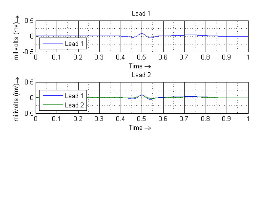
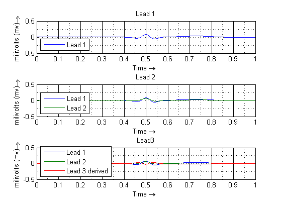
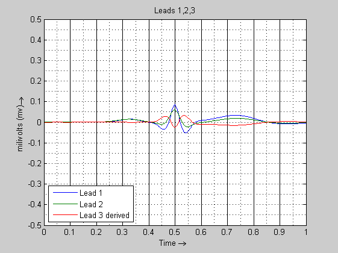
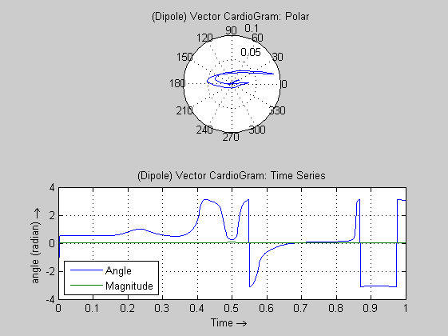
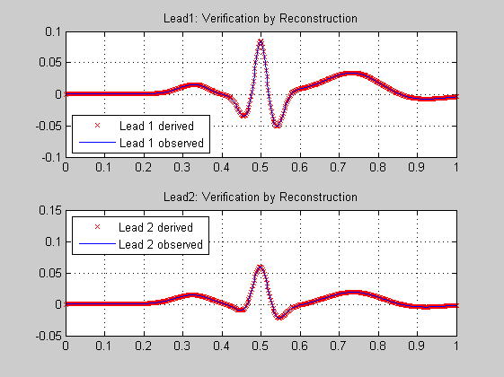

Contents
% ECGSYN % Version 0.83: Theta verified by trignometry and Matrix Projections % and Magnitude Verified by two different formulas % (cleanup) % Version 0.82: Verification by Reconstruction % Version 0.81: VCG and Validation thru trignometry and geometry % Version 0.7 (deprecated): ECG Validation: Attemtps % using datafile: ecg_normal.gif % Version 0.6 (deprecated): 3 Vector CardioGram: Polar & Time Series % Also explored; lead2 derived from lead1. % Version 0.5: 3 Lead ECG (realistic); Polar Plot; % Version 0.4: 2 Lead ECG % Version 0.3: Baseline drift % Version 0.2: X,Y,Z phase Sim % Version 0.1: Crude Simulation % X,Y Phase and State Trajectories plot; No Z. clear all; clc;
t0 = 0; tf = 1; x0 = -0.1; y0 = 0; z0 = 0; options = odeset('OutputFcn',@odephas3); datapts = 500; tspan = [t0:tf/(datapts-1):tf]; global thetai global heighti global widthi configEcgSyn(1); [T1,Y1] = ode45(@ecgsynSolver, tspan, [x0 y0 z0], options); configEcgSyn(21); [T2,Y2] = ode45(@ecgsynSolver, tspan, [x0 y0 z0], options); subplot(3,1,1); plot(T1, Y1(:,3)); legend('Lead 1','Location','SouthWest'); xlabel('Time \rightarrow '); ylabel('milivolts (mv) \rightarrow '); grid on; grid minor; title('Lead 1'); ylim([-0.5 0.5]); subplot(3,1,2); plot(T1, Y1(:,3), T2, Y2(:,3)); legend('Lead 1', 'Lead 2','Location','SouthWest'); xlabel('Time \rightarrow '); ylabel('milivolts (mv) \rightarrow '); grid on; grid minor; title('Lead 2'); ylim([-0.5 0.5]);
Configuring lead 1 - Normal (lesson3:ecg_normal.gif) Configuring lead 1
Derive Lead 3
As L1,L2,L3 are component vectors of the same vector D (dipole). And as we have L1+L3=L2
Y3 = Y2(:,3) - Y1(:,3); %just the z-value of Y1 and Y2 display 'Derive Lead 3'; subplot(3,1,3); plot(T1, Y1(:,3), T2, Y2(:,3), T1, Y3(:,1)); legend('Lead 1','Lead 2','Lead 3 derived','Location','SouthWest'); xlabel('Time \rightarrow '); ylabel('milivolts (mv) \rightarrow '); grid on; grid minor; title('Lead 3'); ylim([-0.5 0.5]); title('Lead3');
Derive Lead 3
Plot L1,L2,L3 together
figure; plot(T1, Y1(:,3), T2, Y2(:,3), T1, Y3(:,1)); legend('Lead 1','Lead 2','Lead 3 derived','Location','SouthWest'); xlabel('Time \rightarrow '); ylabel('milivolts (mv) \rightarrow '); grid on; grid minor; ylim([-0.5 0.5]); title('Leads 1,2,3');
calculate Cardiac Dipole
display 'Derive Dipole'; r3 = sqrt(3); % sqrt(3) D = zeros(datapts,2); % Dipole R = zeros(datapts,2); % Reconstruction for i=1:datapts D(i,1) = atan2(1/r3*(2*Y2(i,3)-Y1(i,3)),Y1(i,3)); % Angle in Radians D(i,2) = Y1(i,3)/cos(D(i,1)); % Magnitude R(i,1) = D(i,2)*cos(D(i,1)); % Reconstruction Lead1 R(i,2) = D(i,2)*cos(pi/3-D(i,1)); % Reconstruction Lead2 % Magnitude by another method % D(i,2) = 2/r3*sqrt(Y1(i,3)^2+Y2(i,3)^2-Y1(i,3)*Y2(i,3)); end
Derive Dipole
Vector CardioGram
figure; subplot(2,1,1); display '(Dipole) Vector CardioGram: Polar'; polar(D(:,1),D(:,2)); grid on; title('(Dipole) Vector CardioGram: Polar'); display '(Dipole) Vector CardioGram: Time Series'; subplot(2,1,2); plot(T1,D(:,1),T1,D(:,2)); legend('Angle','Magnitude','Location','SouthWest'); grid on; title('(Dipole) Vector CardioGram: Time Series'); xlabel('Time \rightarrow '); ylabel('angle (radian) \rightarrow ');
(Dipole) Vector CardioGram: Polar (Dipole) Vector CardioGram: Time Series
Verification
display 'Verification by Reconstruction of Lead 1 and Lead 2'; figure; subplot(2,1,1); plot(T1,R(:,1),'rx',T1,Y1(:,3)); legend('Lead 1 derived','Lead 1 observed','Location','SouthWest'); grid on; title('Lead1: Verification by Reconstruction'); subplot(2,1,2); plot(T1,R(:,2),'rx',T1,Y2(:,3)); legend('Lead 2 derived','Lead 2 observed','Location','NorthWest'); grid on; title('Lead2: Verification by Reconstruction');
Verification by Reconstruction of Lead 1 and Lead 2